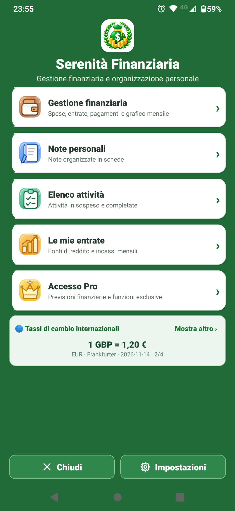
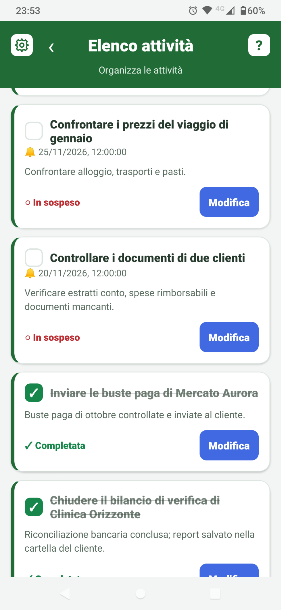

Controllo finanziario
Gestisci spese, stipendio, entrate extra, pagamenti, abbonamenti e voci ricorrenti.
Serenità Finanziaria · Gestione finanziaria e organizzazione personale
Serenità Finanziaria, precedentemente conosciuta come MyMoney, MeuDinheiro e MiDinero, riunisce finanze personali, attività, note e promemoria in una sola app Android.
Serenità Finanziaria è un’app Android per gestire spese, entrate, attività, note personali e promemoria.
Gestione finanziaria e organizzazione personale
Gestisci spese, stipendio, entrate extra, pagamenti, abbonamenti e voci ricorrenti.
Crea attività, promemoria e note personali in testo o voce.
Consulta grafici, calendario finanziario e indicatori del mese.
Usa un PIN da 8 a 16 cifre e archiviazione locale crittografata.
Queste schermate reali mostrano l’interfaccia italiana in modo chiaro e utile.


Guarda il video ufficiale in italiano oppure apri la playlist completa con tutte le lingue disponibili.
Le funzioni principali per finanze, attività e note funzionano localmente. Alcuni servizi esterni richiedono connessione.
Sì. L’app è stata rinominata e mantiene lo stesso pacchetto Android: com.anspro.mymoney.app.
Nel footer trovi il link alla versione dettagliata in inglese.
Serenità Finanziaria è un’app Android per la gestione finanziaria personale e l’organizzazione quotidiana. Pacchetto: com.anspro.mymoney.app · Contatto: moneyproapp@gmail.com
Serenità Finanziaria è disponibile in portoghese, inglese, spagnolo, francese, tedesco, italiano e indonesiano.
Spese, stipendio, entrate extra, rate, abbonamenti e pagamenti ricorrenti.
Previsioni, grafici, calendario, report PDF e strumenti per gli obiettivi di risparmio.
Attività, percentuale completata, note testuali e vocali e OCR locale su immagini selezionate.
Acquisto una tantum per strumenti aggiuntivi, diario personale e backup locali automatici.
PIN da 8 a 16 cifre, biometria compatibile, dati strutturati cifrati e backup portatili v4.
Promemoria locali e comunicazioni Firebase facoltative in sette lingue sulle versioni compatibili.
Quindici temi tra cui Verde classico e Tema scuro, con interfaccia in sette lingue.
Funzioni essenziali gratuite con annunci secondo le preferenze privacy; Pro rimuove i banner.
Consigli semplici per gestire entrate e scadenze.